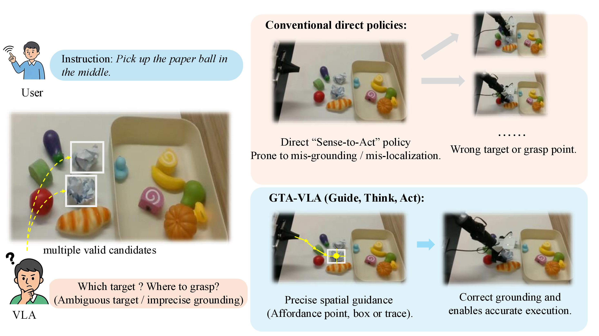
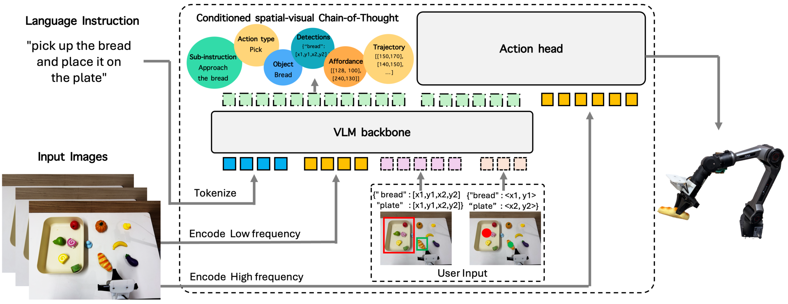
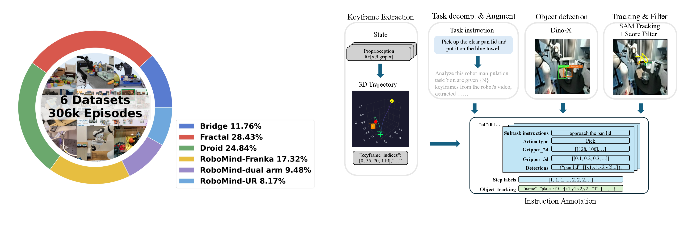
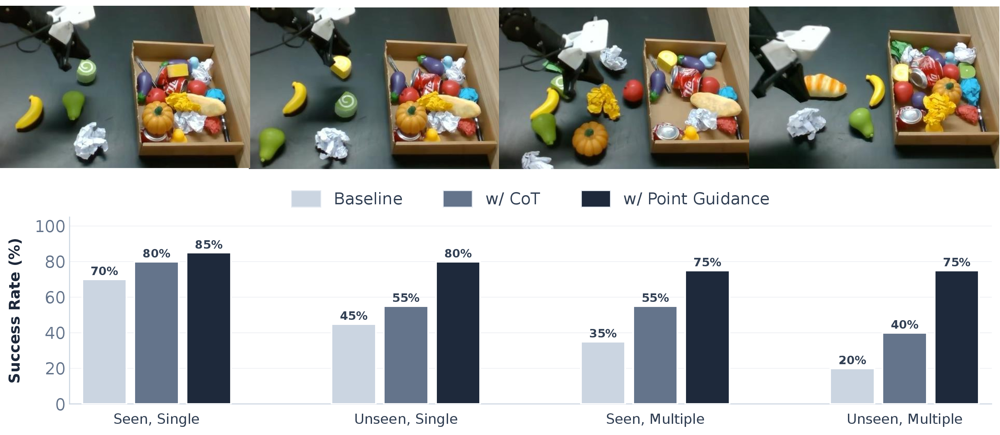

Yiran Ling1,2,6,*, Qing Lian2,*, Jinghang Li2,3, Qing Jiang2,4, Tianming Zhang5, Xiaoke Jiang2, Chuanxiu Liu5, Jie Liu1,6,†, Lei Zhang2,5,†
* Equal contribution (co-first authors)
† Corresponding author: jieliu@hit.edu.cn, leizhang@idea.edu.cn
1Faculty of Computing, Harbin Institute of Technology
2International Digital Economy Academy (IDEA)
3School of Robotics, Hunan University
4South China University of Technology
5Visincept
6National Key Laboratory of Smart Farm Technologies and Systems

Conventional direct VLA policies can fail under spatial ambiguity or imprecise grounding, since they lack an explicit mechanism for interactive correction. GTA-VLA resolves this by using one-shot spatial guidance (affordance points, boxes, or traces) to correct grounding and enable accurate execution.
In this paper, we propose GTA-VLA (Guide, Think, Act), an interactive Vision-Language-Action (VLA) framework that enables spatially steerable embodied reasoning by allowing users to guide robot policies with explicit visual cues. Existing VLA models learn a direct "Sense-to-Act" mapping from multimodal observations to robot actions. While effective within the training distribution, such tightly coupled policies are brittle under out-of-domain (OOD) shifts and difficult to correct when failures occur. Although recent embodied Chain-of-Thought (CoT) approaches expose intermediate reasoning, they still lack a mechanism for incorporating human spatial guidance, limiting their ability to resolve visual ambiguities or recover from mistakes. To address this gap, our framework allows users to optionally guide the policy with spatial priors, such as affordance points, boxes, and traces, which the subsequent reasoning process can directly condition on. Based on these inputs, the model generates a unified spatial-visual Chain-of-Thought that integrates external guidance with internal task planning, aligning human visual intent with autonomous decision-making. For practical deployment, we further couple the reasoning module with a lightweight reactive action head for efficient action execution. Extensive experiments demonstrate the effectiveness of our approach. On the in-domain SimplerEnv WidowX benchmark, our framework achieves a state-of-the-art 81.2% success rate. Under OOD visual shifts and spatial ambiguities, a single visual interaction substantially improves task success over existing methods, highlighting the value of interactive reasoning for failure recovery in embodied control.

Overview of GTA-VLA (Guide, Think, Act). The framework consists of three stages. Guide: the model receives the primary image, the language instruction, and optional spatial priors (e.g., affordance points, boxes, or traces). Think: the VLM backbone generates a conditioned spatial-visual reasoning sequence and the corresponding latent reasoning states Hreasoning. Act: a downstream Flow-Matching action head consumes the latest reasoning states together with high-frequency control observations to produce continuous action chunks. This design decouples slow autoregressive reasoning from fast closed-loop control.

Interact-306K and automatic instruction annotation. Left: Dataset composition: 306K episodes collected from six manipulation sources. Right: Automatic annotation pipeline: keyframe extraction and task decomposition from trajectories, followed by open-vocabulary grounding and tracking to produce structured subtask instructions with temporally consistent object annotations.

Qualitative examples and success rates across four real-world picking tasks (seen/unseen targets and single/multiple candidate objects). Explicit reasoning improves over the baseline, and point guidance provides the largest gains in unseen and reference-ambiguous settings.
| Method | Spatial | Object | Goal | Long | LIBERO Avg | Spoon | Carrot | Cube | Eggplant | SimplerEnv Avg |
|---|---|---|---|---|---|---|---|---|---|---|
| OpenVLA | 84.7 | 88.4 | 79.2 | 53.7 | 76.5 | 4.2 | 0.0 | 8.3 | 45.8 | 14.6 |
| OpenVLA-OFT | 96.2 | 98.3 | 96.2 | 90.7 | 95.3 | - | - | - | - | - |
| π0 | 96.8 | 98.8 | 95.8 | 85.2 | 94.1 | 50.0 | 41.7 | 29.2 | 70.8 | 47.9 |
| GR00T-N1 | 94.4 | 97.6 | 93.0 | 90.6 | 93.9 | 64.5 | 65.5 | 5.5 | 93.0 | 57.1 |
| π0.5 | 98.8 | 98.2 | 98.0 | 92.4 | 96.9 | - | - | - | - | - |
| X-VLA | 98.2 | 98.6 | 97.8 | 97.6 | 98.1 | 95.8 | 75.0 | 62.5 | 70.8 | 76.0 |
| ThinkAct | 88.3 | 91.4 | 87.1 | 70.9 | 84.4 | 37.5 | 8.7 | 58.3 | 70.8 | 43.8 |
| CoT-VLA | 87.5 | 91.6 | 87.6 | 69.0 | 81.1 | - | - | - | - | - |
| Uni-VLA | 97.0 | 99.0 | 92.6 | 90.8 | 94.8 | 83.3 | 66.7 | 33.3 | 95.8 | 69.8 |
| MolmoAct | 87.0 | 95.4 | 87.6 | 77.2 | 86.6 | - | - | - | - | - |
| GTA-VLA | 99.0 | 98.8 | 98.4 | 97.6 | 98.6 | 95.8 | 87.5 | 66.7 | 75.0 | 81.2 |
| Method | Sensor | Lighting | State | Diversity | Unseen Obj. | Distractor | Avg |
|---|---|---|---|---|---|---|---|
| OpenVLA | 5.2 | 6.3 | 0.0 | 8.3 | 2.1 | 0.0 | 3.7 |
| π0.5 | 9.4 | 10.4 | 9.4 | 8.3 | 6.3 | 0.0 | 7.3 |
| X-VLA | 27.1 | 68.8 | 68.7 | 66.3 | 36.2 | 46.9 | 52.3 |
| GTA-VLA | 39.6 | 76.1 | 79.2 | 68.1 | 58.3 | 50.0 | 61.4 |
| Guidance Modality | Unseen Toy | Unseen Fruit | Unseen Tool | Unseen Avg | Color Distractor | Pos. Distractor | Distractor Avg |
|---|---|---|---|---|---|---|---|
| Dense Instruction (π0.5) | 8.3 | 12.5 | 8.3 | 9.7 | 8.3 | 8.3 | 8.3 |
| Dense Instruction (GTA-VLA) | 12.5 | 41.6 | 29.2 | 27.8 | 45.8 | 29.2 | 37.5 |
| + Visual Point Guide | 33.3 | 47.9 | 41.6 | 40.9 | 58.3 | 50.0 | 54.2 |
| + Visual Box Guide | 54.1 | 70.8 | 45.8 | 56.9 | 41.6 | 45.8 | 43.7 |
@article{gtavla2026,
title={GTA-VLA: Guide, Think, Act},
author={Your Name and Co-authors},
journal={arXiv preprint},
year={2026}
}